Alright, Day 6. You’ve been grinding through the essentials, and maybe you’re wondering—when do we get to the cool AI stuff?
Here’s the truth: everyone wants to build powerful AI models, but most don’t want to put in the work to really understand them. They copy code, tweak a few parameters, and hope for the best. That’s not what we’re doing here.
We’re learning things properly. We’re building real intuition. And yeah, some of it isn’t flashy—but when the time comes to actually code Stable Diffusion, you’ll be glad you stuck with it.
So take a breath, refocus, and let’s knock this out.
The Gaussian Distribution: Nature's Favorite Pattern
The Gaussian distribution, also known as the normal distribution or the bell curve, is perhaps the most important probability distribution (a function) in statistics. It appears so frequently in nature and society that it's often called nature's favorite pattern.
What is a Gaussian Distribution?
The Gaussian distribution is a way of describing how data is spread out. It’s called a normal distribution because many natural phenomena, like people’s heights or test scores, tend to follow this kind of distribution. The distribution looks like a bell curve—most data points are clustered around the mean (the center), and fewer points are found as you move further away from the mean.
The shape is symmetric, meaning if you were to fold it in half at the center, both sides would match. The center is where the mean of the data lies, and as you move away from the center, the probability of data points decreases.
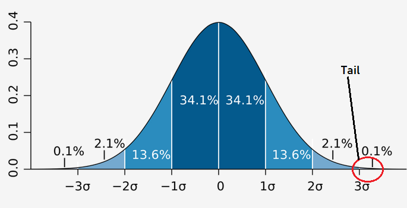
In this figure, you can see the Gaussian distribution with a mean of 0 and a standard deviation (denoted by σ) of 1. Just a quick note: the tails of the curve (both on the left and right) are asymptotic, which is a fancy way of saying they approach the x-axis but never quite touch it. In simpler terms, the tails get lower and lower as they stretch out, but they never reach zero. And that’s exactly what matters here—while the curve flattens out, it never truly ends.
You might be wondering, out of the millions of probability distributions out there, why focus on
this specific one—the Gaussian distribution? Well, here’s the thing: the Gaussian distribution is
everywhere in nature. It pops up all the time when you measure things like people’s heights, test
scores, or even natural phenomena like the distribution of error in scientific experiments.
But why is it so common? The answer lies in what the Gaussian distribution captures: the average.
Now, let’s pause for a second and think about why we even call something an "average." An average is the
middle—it’s the point where
most of the data is concentrated. The idea is that, in a typical population, you’re much more likely to
find people whose heights are around the average (let’s say 170 cm) than you are to find someone who is
200 cm or 100 cm tall.
Think about it: not everyone can be extremely tall or short. Those are the extremes, and while they
exist, they’re far less common. The majority of people (or data points) will be clustered around the
middle. In other words, the Gaussian
distribution beautifully models how things naturally tend to gather around the average, with fewer and
fewer occurrences as you move away from the center.
This is why it’s so useful: it mirrors real-life data distributions, where most things tend to fall
near the middle, and the extremes are rare. So, whether it’s human height, intelligence scores, or even
the spread of errors in a system,
the Gaussian distribution helps us understand and predict what’s most likely to happen. It gives us a
powerful tool to describe how things are typically distributed, making it easier to analyze and work
with data.
The Gaussian distribution is defined by a simple equation. Here it is:
No, I'm not an alien who wrote this in another language. Just give me a second, and I'll make you
understand this extremely simple and easy equation.
Let’s break it down:
-
(pronounced mu): Just the symbol for mean. Nothing new here.
-
: The standard deviation
symbol. Easy.
Okay before moving forward, I'll like to explain why we are using the mean and standard deviation in
Gaussian Distributions.
Okay, suppose we've a normal distribution with mean = 0, and standard deviation as 1.
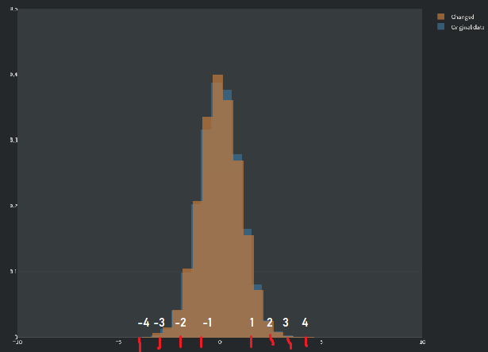
Ahem. Stop fawning over my top-tier editing skills! Let’s get back to business, shall we?
Here, we’re going to focus on the orange graph, which represents a specific Gaussian distribution.
The blue graph, on the other hand, serves as a reference for comparison. It’s a standard Gaussian
distribution where the mean is set
to 0, and the standard deviation is set to 1. This is a special case known as the standard normal
distribution.
I'll talk about standard normal distribution in the end.
Now, here mean was 0, but what if we changed it to something else? Nobody can stop us!!
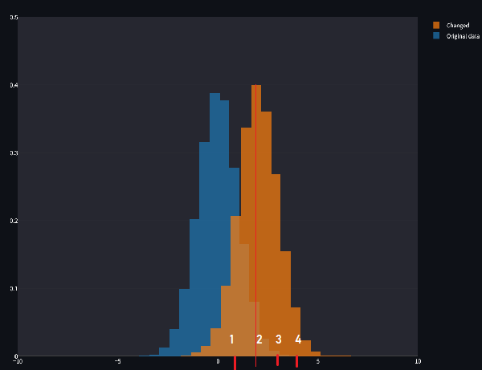
Now, if we set the mean to a negative value, the distribution shifts to the left. It’s the same bell curve, the same symmetrical shape, but it’s now centered at a point less than zero. This flexibility is what makes the Gaussian distribution so versatile: by simply tweaking the mean, you can make it fit different types of data.
Ah, and for anyone wondering—yes, negative means are completely possible! The mean doesn’t always have to be a shiny, positive number. It all depends on the data you're working with. For example, temperatures measured in Celsius can easily be negative. Similarly, in finance, if you’re analyzing profit and loss, a mean loss—represented as a negative number—is quite common when a company is having a rough quarter.
So, whether it’s positive, zero, or negative, the mean simply tells us where the distribution is centered, and shifting it is as easy as changing its value. This sliding property of the Gaussian distribution makes it incredibly useful for modeling data, no matter where the center of that data happens to be.
Enough about means, let's talk about standard deviation.
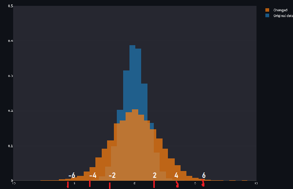
Wait, what’s this? Our distribution just turned fat when we increased the standard deviation to 2? Does this mean that if we could shrink the standard deviation enough, we’d magically lose weight? If you figure out how to market that as a business idea, don’t forget to cut me in for at least 75% equity, because it was my genius idea to begin with.But jokes aside, why did the distribution get fatter? The answer is actually quite simple: the standard deviation controls the spread of the data around the mean. When the standard deviation is larger, the data is more spread out, meaning more values fall further away from the mean. The result? A wider, flatter curve.
Think of it this way: if the standard deviation is small, most of the data is tightly packed around the mean, creating a tall and skinny distribution. This is like a neat little package where almost everything is close to the center. But when the standard deviation increases, the data starts to spread out like a messy room, and fewer points are close to the mean. The distribution "stretches," becoming wider and flatter, and that’s why it looks fatter on the graph.
Let’s put this in context: imagine test scores in a classroom. If the standard deviation is small, it means most students scored similarly to the average—there’s less variation. But if the standard deviation is large, the scores are all over the place, with some students scoring way above or below the mean.
So, the standard deviation doesn’t just affect how fat or thin the curve looks—it directly tells us how much variability exists in the data. And this variability is crucial in real-world scenarios. For example:
- In manufacturing, a small standard deviation means consistent quality, while a large one suggests issues with reliability.
- In finance, a large standard deviation in stock prices signals high risk, while a small one suggests stability.
Last example,
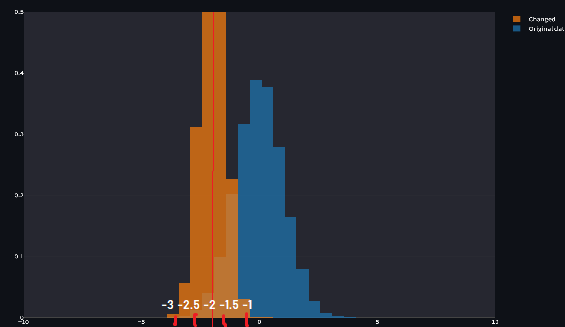
We have a thin distribution, who is shifted to the left, Mean is -2, and standard deviation is 0.5.
I think all of you have understood all this. But if you still want more examples, visit this site.
Now, back to our equation.
You might be wondering? What's e doing here? What does that even mean? Well, it's something you really don't need to learn. I'll tell you something even more interesting.
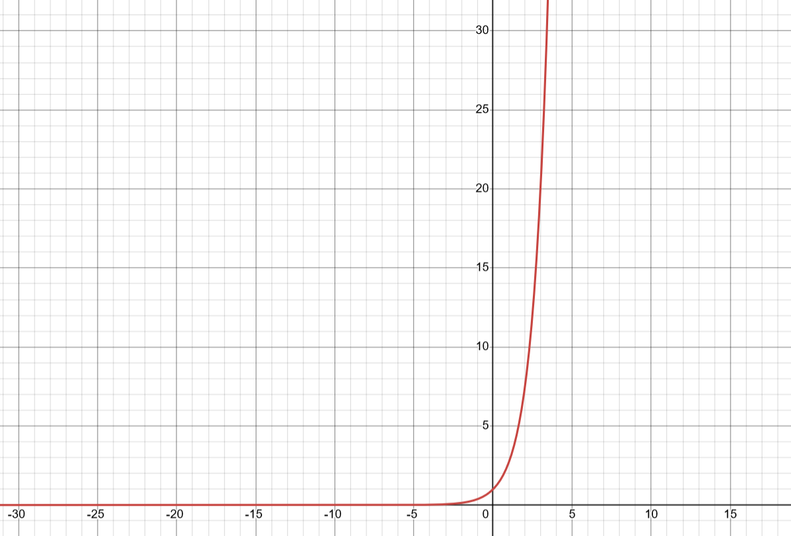
Graph of
and
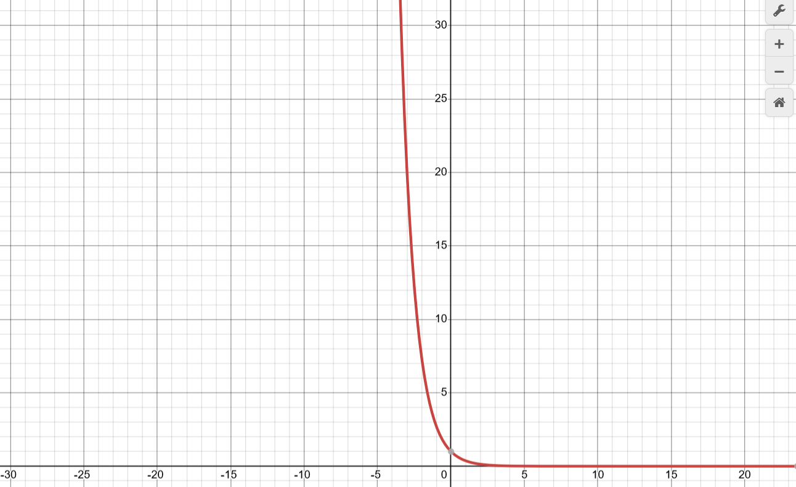
Graph of
But here's the real deal,
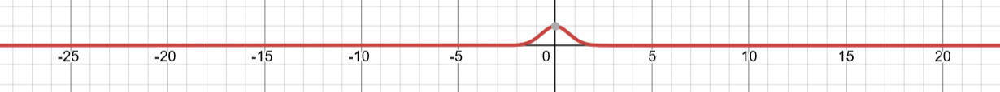
Graph of
But if you look at our formula, we also have a μ (mean)?Well, intuitively, it's used to make adjustments to our graph. About where we want it on the horizontal line? We use mean.
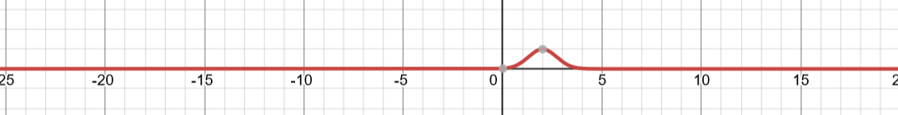
Here,
with mean=2.
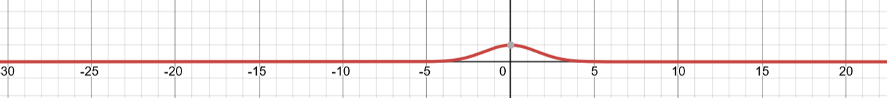
Here,
Mean is 0, while standard deviation is 5. We use standard deviation for scaling, and multiply by 2 to scale in both direction.
Well, we got our exponential part. Congrats. We're almost there.
Now
Well this part is just the integral of the exponential part
. Don't worry, we won't
integrate anything. Instead we will just get the answer. :)
But do you remember why we use integration? To find the area under the curve. Basically the addition of all the probabilities in a continious variable. Well, we get the area, and doing the same thing as we did previously to normalize. Therefore, we divide the term and get our formula.
Easy. You can make the graph using this
site.
Now, let's talk about standard normal distribution.
The standard normal distribution. It’s the one everyone knows and loves, and for good reason. This specific version of the normal distribution is special because it’s standardized—clean, simple, and universal. Let me explain.
What Makes It Standard?
The standard normal distribution is just a normal distribution with some very specific parameters:
1. =0: The center of the curve is at 0.
2. =1: The spread of the curve is fixed so that one unit in either direction from the mean equals one standard deviation.
That’s it. By setting these two parameters, we get a distribution that’s universal and easier to work with. The beauty of the standard normal distribution lies in its simplicity—there’s no need to deal with awkward units or offsets. It’s like starting at the origin of a graph, where everything is centered and aligned just right.
Why Do We Care about This?
You might wonder, Why are we obsessed with this one specific distribution?
Before telling you why, I'll tell you how you can convert any normal distribution to standardized form.
Z-Scores and Standardization:
Most real-world data doesn’t follow a standard normal distribution directly. But we can transform any normal distribution into a standard normal distribution by converting the values into Z-scores.
The formula is:
-
X is the data point we're interested in.
- Mean and standard deviation is something you guys
should know.
- Z is the number of standard deviations X is away from the mean.
Z-scores allow us
to compare data points from different distributions
on a common scale. For example, if one test has a mean score of 50 and
another has a mean of 100, Z-scores let you figure out how both scores
compare relative to their respective distributions. We subtract mean to make the mean 0( mean
centering), and we divide to scale the values.
A standard normal distribution is the ultimate cheat sheet for probabilities. Thanks to its fixed
mean and standard deviation, statisticians have pre-computed the probabilities (or areas under the
curve) for every possible range
of values. These are stored in Z-tables. If you want to know the probability of a random variable being
less than, say, 1.3, you don’t have to integrate anything—just look it up! This is huge because directly
integrating is very
computationally expensive. But as we have this cheat sheet, it becomes very easy.
Alright, let’s tackle Z-tables with a simple and fun example. Here’s an example:
Imagine you own an ice cream shop. On a hot summer day, you track the sales of ice cream cones. The
average number of cones sold per day μ is 100, with a σ of 10.
One day, your shop sells 120 cones. Naturally, you’re curious: How unusual is that? Is selling 120
cones on a single day normal, or is it a rare occurrence?
To answer this, let’s calculate the Z-score for 120 cones and then use a Z-table to find the
probability of selling that many cones (or fewer).
Where:
- X = 120 (the value you’re interested in)
- μ = 100 (the mean)
- σ = 10 (the standard deviation)
Substitute the values:
So, the Z-score is 2.
Okay, then what?
Look It Up in the Z-Table
We've 2 types of z tables. Positive and negative.
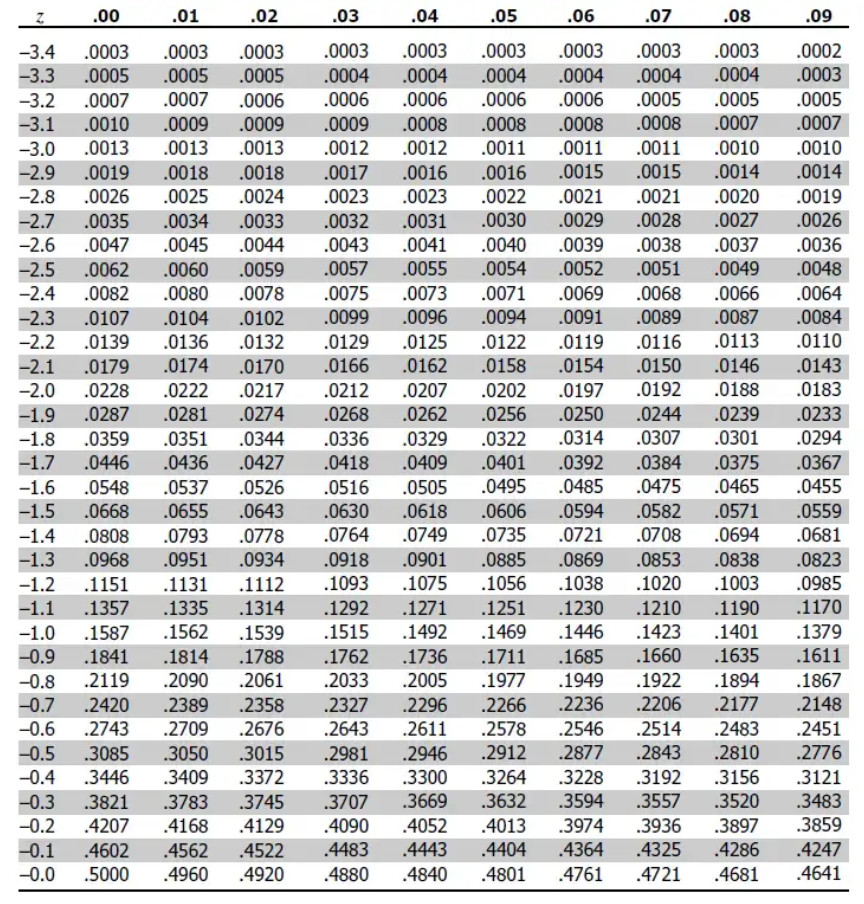
This is the negative one.
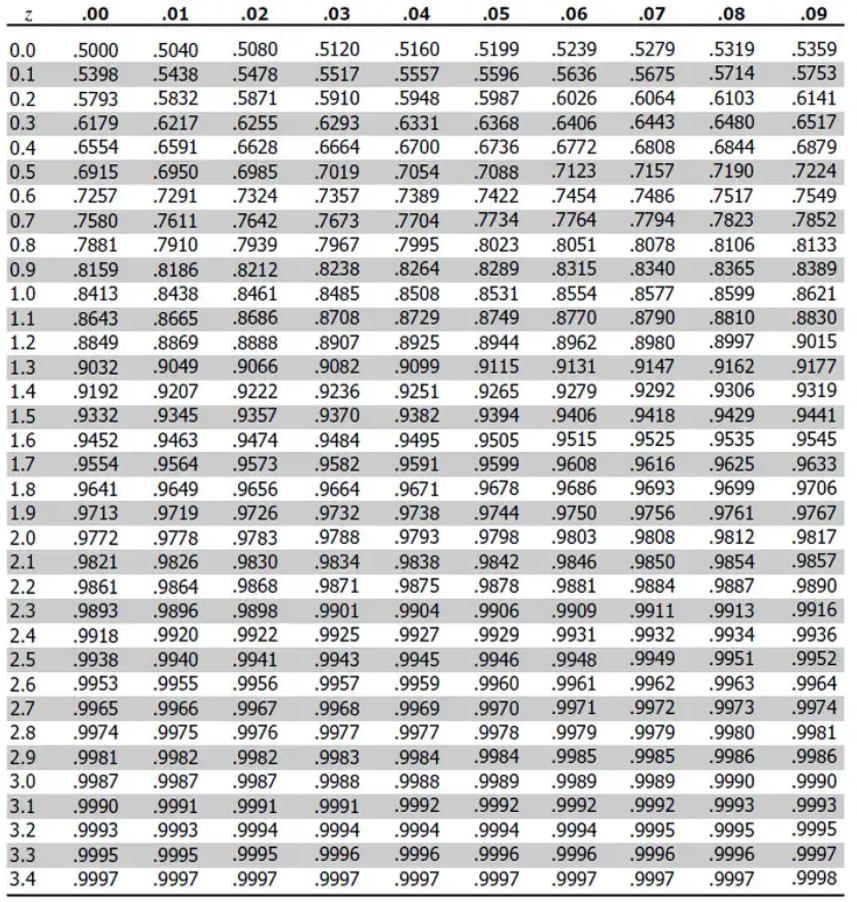
This is the positive one.
From the table, the value for Z = 2.00 is 0.9772. But this only gives for the left part of the curve. This means the area under the curve to the left of Z = 2 is 97.72%.
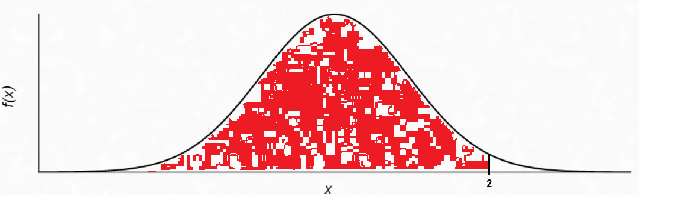
Here, we got the probability for the red part (don't mind the white spots, I couldn't edit this properly). But we want to find the % where we sell more than 120 cones. So we subtract the values, 1 - 0.9772 = 0.0228.
That leaves 2.28% of the time for days when you sell more than 120 cones.
Why Subtract 1 and 0.9772?
When we use a Z-table to look up a Z-score, the value we get represents the probability of an event occurring up to that point—in other words, the area under the curve to the left of the Z-score. For our example, Z=2.00 gave us 0.9772, meaning 97.72% of sales days will have 120 cones or fewer sold.
But our goal was to find the probability of selling more than 120 cones. For that, we need the area to the right of the Z-score (the white part of the graph). Since the total area under the curve is always 1 (representing 100% probability), we subtract the left-hand probability:
1 - 0.9772=0.0228
This tells us that the probability of selling more than 120 cones is 2.28%.
The 68-95-99.7 Rule: The Magic of Gaussian Distributions
One of the reasons the Gaussian (normal) distribution is so special is because of this handy rule, which explains how much of your data falls within specific ranges of the mean. Let’s break it down
Imagine a teacher gives a math
test, and the scores are normally distributed
- The class average (μ) is 70
points.
- The standard deviation (σ) is 10 points.
Now, picture the teacher dividing the
class into groups based on how far their scores are from the average:
- 68% (the average students): Most students (68%) scored within 1 standard deviation of the average—between 70-10=60 and 70+10=80. These are the kids who did pretty normal. They're not acing the test, but they're not failing either. They're your typical, dependable middle-of-the-class crowd.
- 95% (the overachievers and the struggling ones): If we extend to 2 standard deviations, between 70-20=50 and 70+20=90, this now includes 95% of the students. This range captures both the high-achievers (scores of 80 to 90) and those who struggled but still passed (scores of 50 to 60). You’d be hard-pressed to find anyone outside this range.
- 99.7% (the extreme cases): Go to 3 standard deviations—between 70-30=40 and 70+30=100—and you’ve included almost the entire class (99.7%). These are the absolute outliers: the genius who scored 100 or the poor soul who bombed with a 40. But remember, only 0.3% of students fall outside this range (those scoring below 40 or above 100). They’re unicorns—rare and unusual.
CONGRATULATIONS!!!
There you have it, folks—our deep dive into the
magical world of ever-glorious Gaussian distribution.
By now, you’re not just looking at data; you’re starting to understand its story.
From next blog
onwards, we’ll start with Deep Learning.
Now
do re-read the
whole thing again. Until you can understand every concept. Take a pen
and paper; and make notes. Revise. And remember, nothing is tough. You
just need to have the hunger for knowledge.